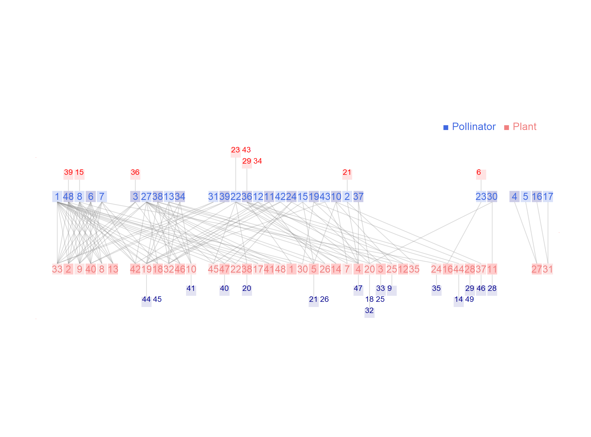

Network: M_PL_031

Pollinator 1 Apis.mellifera, 2 Augochlora.sp1.M_PL_031, 3 Augochloropsis.sp1.M_PL_031, 4 Augochloropsis.sp2.M_PL_031, 5 Augochloropsis.sp3.M_PL_031, 6 Bombus.atratus, 7 Bombus.pullatus, 8 Bombus.volucelloides, 9 Brachygastra.lecheguana, 10 Calicopis.sp1.M_PL_031, 11 Campsomeris.sp1.M_PL_031, 12 Ceratina.sp1.M_PL_031, 13 Cerciris.sp1.M_PL_031, 14 Coereba.flaveola., 15 Copestylum.sp1.M_PL_031, 16 Cyclocephala.sp1.M_PL_031, 17 Cyclocephala.sp2.M_PL_031, 18 Cylindromia.sp1.M_PL_031, 19 Dialictus.sp1.M_PL_031, 20 Dialictus.sp2.M_PL_031, 21 Eristalis.sp1.M_PL_031, 22 Euglossa.sp1.M_PL_031, 23 Eulaema.meriana, 24 Exomalopsis.sp1.M_PL_031, 25 Hylaeus.sp1.M_PL_031, 26 Melipona.compresipes, 27 Melipona.scutellaris, 28 Montezumia.azurescens, 29 Oxybelus.sp1.M_PL_031, 30 Pachodynerus.nasidens, 31 Panoquina.bola, 32 Pepsis.sp1.M_PL_031, 33 Pereirapsis.sp1.M_PL_031, 34 Polistes.lanio, 35 Polistes.vibex, 36 Politmus.milleri, 37 Polybia.occidentalis, 38 Polybia.scrobalis, 39 Psedagochloropsis.sp1.M_PL_031, 40 Pyrrhogige.sp1.M_PL_031, 41 Sarcodexia.innota, 42 Sphex.ichneumoneus, 43 Sphex.sp1.M_PL_031, 44 Sticia.sp1.M_PL_031, 45 Tachites.sp1.M_PL_031, 46 Vehilius.inca, 47 Volucella.sp1.M_PL_031, 48 Xylocopa.sp1.M_PL_031, 49Zonotrichia.capensis
Plant
1 Befaria glauca, 2 Bonnetia sessilis, 3 Borreria capitata, 4 Brocchinia acuminata, 5 Calea lucidivenia, 6 Catasetum discolor, 7 Chromolanea sp1 M_PL_031, 8 Clusia grandiflora, 9 Clusia pusilla, 10 Cybianthus quelchii, 11 Cyrilla racemiflora, 12 Declieuxia fruticosa, 13 Digomphia laurifolia, 14 Epidendrum ibaguense, 15 Epistephium duckei, 16 Eriopsis biloba, 17 Galactophora schomburgkiana, 18 Heliamphora heterodoxa, 19 Humiria balsamifera, 20 Ilex retusa, 21 Irlbachia nemorosa, 22 Macairea pachyphylla, 23 Macairea parvifolia, 24 Mandevilla benthamii, 25 Marcetia taxifolia, 26 Meriana sclerophylla, 27 Miconia ciliata, 28 Mikania psilotachya, 29 Notopora schomburgkii, 30 Pagameopsis garryoides, 31 Philodendron ptarianum, 32 Phthirusa adunca, 33 Poecilandra retusa, 34 Pogonia stricta, 35 Remijia densiflora, 36 Sauvagesia angustifolia, 37 Sipanea galioides, 38 Siphanthera cordifolia, 39 Sobralia liliastrum, 40 Stegolepsis angustata, 41 Ternstroemia crassifolia, 42 Tibouchina fraterna, 43 Tococa nitens, 44 Vaccinium euryanthum, 45 Vaccinium puberulum, 46 Vernonia bolivariensis, 47 Vismia lauriformis, 48Xyris setigera
Ramirez, N. (1989). Biologia de polinizacion en una comunidad arbustiva tropical de la alta Guyana Venezolana. Biotropica 21, 319-330. Canaima Nat. Park, Venezuela